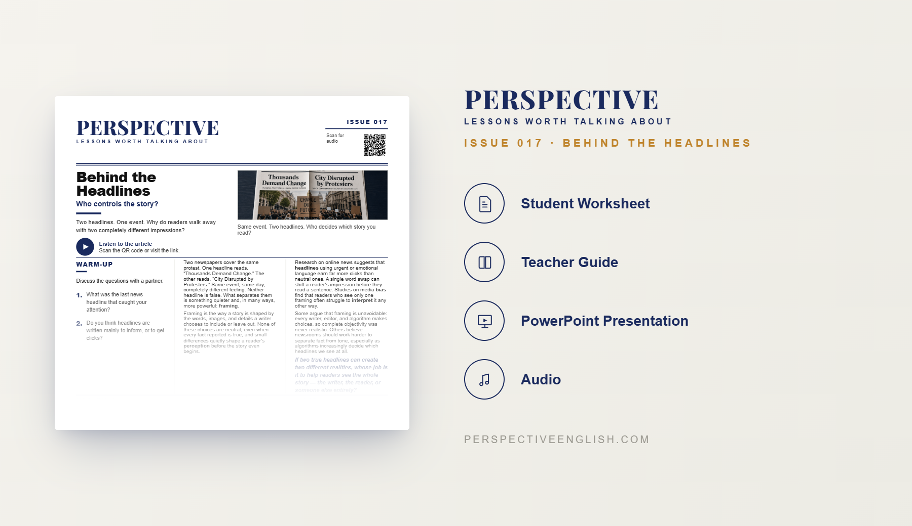

ISSUE 017
Behind the Headlines
Who controls the story?
A ready-to-teach English lesson exploring media bias, headlines, framing, clickbait, and how news organizations can present the same facts in very different ways.
Collection 03 includes Issues 016–020.

LESSON PREVIEW

ABOUT THIS LESSON
News reports may begin with the same facts, but the final stories can look very different. Headlines, images, quotations, and the details a journalist chooses to include can all shape what audiences believe.
This magazine-style English lesson explores media bias, framing, clickbait, editorial decisions, and the influence news organizations have over the way events are understood.
Students read an original article, learn useful vocabulary, and take part in discussion, critical thinking, speaking, and writing activities about headlines, trust, media choices, and who controls the story.
FROM THE ARTICLE
WHAT'S INCLUDED
- Magazine-style student worksheet
- Original article and audio recording
- Vocabulary and reading activities
- Discussion and critical-thinking tasks
- Speaking challenge and writing prompt
- Teacher guide and complete answer key
- Classroom presentation
GET THE COMPLETE LESSON
Ready to teach Behind the Headlines?
Purchase this lesson individually or save with Perspective Collection 03.
Secure checkout and instant digital delivery through Payhip.